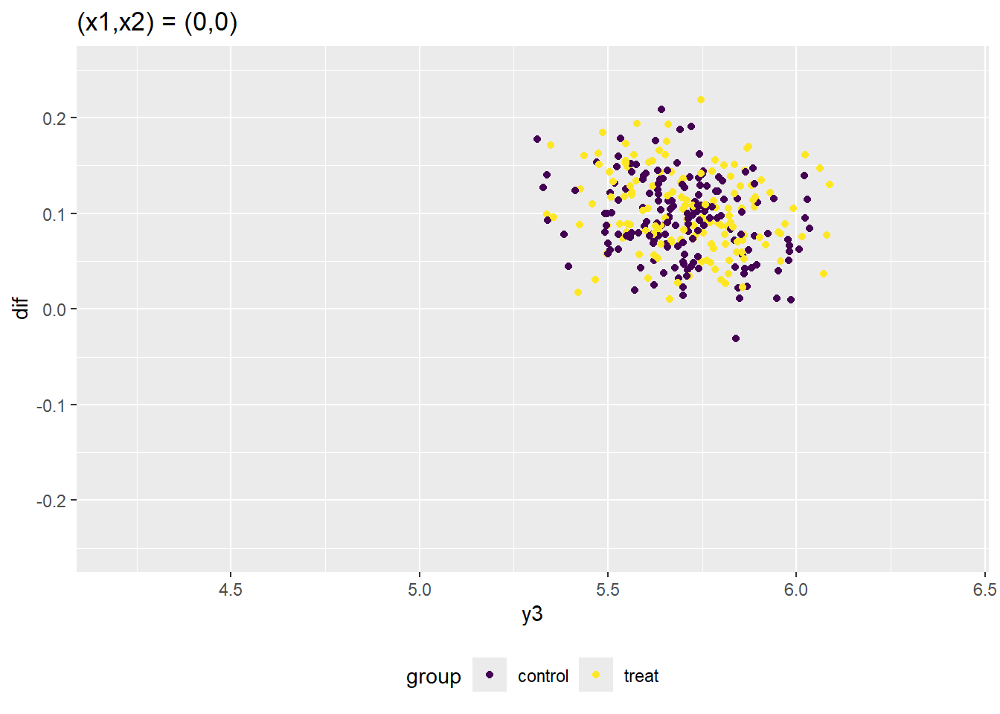

Code
N <- 1000
T0 <- 4
T1 <- 6
T <- T0 + T1参照：因果推論の計量経済学（川口、澤田）：第10章 差の差法とその周辺の発展的トピック
個体数Nと期間Tの設定
N <- 1000
T0 <- 4
T1 <- 6
T <- T0 + T1処置効果を生成するパラメータの設定。複数時点で処置が発生し、処置群の割り当てタイミングによって効果量や効果の符号が異なるデザインとする。
mean_tau_i_multi <- 0.1
sd_tau_i_multi <- 0.2
scale_5 <- 1
scale_6 <- -2.5
scale_7 <- -1.75
scale_8 <- -1共変量に依存するトレンドを決定するパラメータの設定
slope_x1 <- -0.2
slope_x2 <- -0.1最初に複数時点での処置発生デザインを生成。生成過程は参照サイトを参照。（TWFEの章で生成したデータと同じもの）
set.seed(1)
df_design_nocov <-
CausalInferenceTextbook::generate_df_multiperiod(
N = N,
T = T,
T1 = T1,
T0 = T0,
diff_trend = FALSE,
mean_tau_i = mean_tau_i_multi,
sd_tau_i = sd_tau_i_multi,
scale_5 = scale_5,
scale_6 = scale_6,
scale_7 = scale_7,
scale_8 = scale_8
)各コホートの割合は以下。
df_design_nocov %>%
dplyr::group_by(
g5_i,
g6_i,
g7_i,
g8_i,
) %>%
dplyr::summarise(
fraction = length(z_it)
) %>%
dplyr::ungroup() %>%
dplyr::mutate(
fraction = fraction / sum(fraction)
) %>%
dplyr::arrange(
g8_i,
g7_i,
g6_i,
g5_i
) %>%
kbl() %>%
kable_styling()`summarise()` has grouped output by 'g5_i', 'g6_i', 'g7_i'. You can override
using the `.groups` argument.| g5_i | g6_i | g7_i | g8_i | fraction |
|---|---|---|---|---|
| FALSE | FALSE | FALSE | FALSE | 0.325 |
| TRUE | FALSE | FALSE | FALSE | 0.457 |
| FALSE | TRUE | FALSE | FALSE | 0.128 |
| FALSE | FALSE | TRUE | FALSE | 0.042 |
| FALSE | FALSE | FALSE | TRUE | 0.048 |
以下で与えられる処置効果を算出する。 \[ \tau_{it} = \tau_t・|\tau_i|・(1・G_{5i} + (-2.5)・G_{6i} + (-1.75)・G_{7i} + (-1)・G_{8i}) \]
まず、\(|\tau_i|\)の期待値を計算する。
mean_abs_tau_i <-
(
mean_tau_i_multi +
sd_tau_i_multi * (dnorm((-mean_tau_i_multi) / sd_tau_i_multi)) /
(1 - pnorm((-mean_tau_i_multi) / sd_tau_i_multi))
) *
pnorm(mean_tau_i_multi / sd_tau_i_multi) -
(
mean_tau_i_multi -
sd_tau_i_multi * dnorm(((-mean_tau_i_multi) / sd_tau_i_multi)) /
(pnorm((-mean_tau_i_multi)/ sd_tau_i_multi))
) *
(1 - pnorm(mean_tau_i_multi / sd_tau_i_multi))次に、上記で計算した\(\mathbb{E}[|\tau_i|]\)と、予めデータに含まれているtau_tから、ATTの期間平均を算出する。
att_pop_nocov_group <-
df_design_nocov %>%
dplyr::filter(
time > T0,
g5_i == 1
) %>%
dplyr::summarise(
group = "5",
att_pop_nocov = mean(unique(tau_t)) * scale_5 * mean_abs_tau_i,
fraction_within_group = sum(z_it) / sum(df_design_nocov$z_it)
)
att_pop_nocov_group <-
rbind(
att_pop_nocov_group,
df_design_nocov %>%
dplyr::filter(
time > T0 + 1,
g6_i == 1
) %>%
dplyr::summarise(
group = "6",
att_pop_nocov = mean(unique(tau_t)) * scale_6 * mean_abs_tau_i,
fraction_within_group = sum(z_it) / sum(df_design_nocov$z_it)
)
)
att_pop_nocov_group <-
rbind(
att_pop_nocov_group,
df_design_nocov %>%
dplyr::filter(
time > T0 + 2,
g7_i == 1
) %>%
dplyr::summarise(
group = "7",
att_pop_nocov = mean(unique(tau_t)) * scale_7 * mean_abs_tau_i,
fraction_within_group = sum(z_it) / sum(df_design_nocov$z_it)
)
)
att_pop_nocov_group <-
rbind(
att_pop_nocov_group,
df_design_nocov %>%
dplyr::filter(
time > T0 + 3,
g8_i == 1
) %>%
dplyr::summarise(
group = "8",
att_pop_nocov = mean(unique(tau_t)) * scale_8 * mean_abs_tau_i,
fraction_within_group = sum(z_it) / sum(df_design_nocov$z_it)
)
)
att_pop_nocov_group %>%
kbl() %>%
kable_styling()| group | att_pop_nocov | fraction_within_group |
|---|---|---|
| 5 | 0.1742292 | 0.7422848 |
| 6 | -0.4407960 | 0.1732539 |
| 7 | -0.3071599 | 0.0454792 |
| 8 | -0.1788831 | 0.0389821 |
各グループの割合について加重平均を取り、母集団におけるATTの期間平均を算出。
att_pop_nocov <-
att_pop_nocov_group$fraction_within_group %*%
att_pop_nocov_group$att_pop_nocov
att_pop_nocov [,1]
[1,] 0.03201543データに含まれるt_itの値から、標本におけるATTをコホートごとに計算すると、上記で算出した母集団におけるATTとは厳密には一致しない。
att_sample_nocov_group <-
df_design_nocov %>%
dplyr::filter(
group_i > 0
) %>%
dplyr::group_by(
group_i
) %>%
dplyr::summarise(
att_sample = sum(tau_it * (time >= group_i)) / sum(time >= group_i)
)
att_sample_nocov_group %>%
kbl() %>%
kable_styling()| group_i | att_sample |
|---|---|
| 5 | 0.1818912 |
| 6 | -0.4782172 |
| 7 | -0.4059614 |
| 8 | -0.1652985 |
標本における全コホートのATTを、処置群z_it = 1について\(\tau_{it}\)の平均により算出。
att_sample_nocov <-
df_design_nocov %>%
dplyr::filter(
z_it == 1
) %>%
dplyr::summarise(
att_sample = mean(tau_it)
) %>%
dplyr::pull(att_sample)
att_sample_nocov[1] 0.02725558次に、線形トレンドが共変量の値によって異なるデータを生成。
diff_trendをTRUEにし、以下となるよう設定する。(共変量x1i やx2iの値が0をとる個体が増加トレンド、二種類の共変量の値がどちらか一方でも1をとる個体が減少トレンドを持つ。) \[
b_t = (t/T) * (1 - x_{1i} - x_{2i}) + (-0.2) * (t/T) * x_{1i} + (-0.1) * (t/T) * x_{2i}
\]
set.seed(1)
df_design_cov <-
CausalInferenceTextbook::generate_df_multiperiod(
N = N,
T = T,
T1 = T1,
T0 = T0,
diff_trend = TRUE,
mean_tau_i = mean_tau_i_multi,
sd_tau_i = sd_tau_i_multi,
scale_5 = scale_5,
scale_6 = scale_6,
scale_7 = scale_7,
scale_8 = scale_8,
slope_x1 = slope_x1,
slope_x2 = slope_x2
)母集団におけるグループごとのATTを計算し、上記ケースと同一であることを確認。
att_pop_cov_group <-
df_design_cov %>%
dplyr::filter(
time > T0,
g5_i == 1
) %>%
dplyr::summarise(
group = "5",
att_pop_cov = mean(unique(tau_t)) * scale_5 * mean_abs_tau_i,
fraction_within_group = sum(z_it) / sum(df_design_cov$z_it)
)
att_pop_cov_group <-
rbind(
att_pop_cov_group,
df_design_cov %>%
dplyr::filter(
time > T0 + 1,
g6_i == 1
) %>%
dplyr::summarise(
group = "6",
att_pop_cov = mean(unique(tau_t)) * scale_6 * mean_abs_tau_i,
fraction_within_group = sum(z_it) / sum(df_design_cov$z_it)
)
)
att_pop_cov_group <-
rbind(
att_pop_cov_group,
df_design_cov %>%
dplyr::filter(
time > T0 + 2,
g7_i == 1
) %>%
dplyr::summarise(
group = "7",
att_pop_cov = mean(unique(tau_t)) * scale_7 * mean_abs_tau_i,
fraction_within_group = sum(z_it) / sum(df_design_cov$z_it)
)
)
att_pop_cov_group <-
rbind(
att_pop_cov_group,
df_design_cov %>%
dplyr::filter(
time > T0 + 3,
g8_i == 1
) %>%
dplyr::summarise(
group = "8",
att_pop_cov = mean(unique(tau_t)) * scale_8 * mean_abs_tau_i,
fraction_within_group = sum(z_it) / sum(df_design_cov$z_it)
)
)
att_pop_cov_group %>%
kbl() %>%
kable_styling()| group | att_pop_cov | fraction_within_group |
|---|---|---|
| 5 | 0.1742292 | 0.7422848 |
| 6 | -0.4407960 | 0.1732539 |
| 7 | -0.3071599 | 0.0454792 |
| 8 | -0.1788831 | 0.0389821 |
共変量（\(x_{1i},x_{2i}\)）が1を取る個体は、処置群グループとなる確率が高くなる設定のため、処置群の観測が統制群の観測よりも低い値となる（二種類の共変量の値がどちらか一方でも1をとる個体が減少トレンドを持つため）。
処置群と統制群の統制期間(第3期と第4期)について、第3期の顕在結果と第3期から第4期への顕在結果トレンドを比較すると、顕在結果が小さくなることを表す左下の領域に処置群が統制群よりも多く分布しており、平行トレンドが必ずしも成り立っているとはいえない。
一方で、共変量値ごとに分けた散布図では、各部分標本では処置群と統制群でトレンドに大きな差がないことが確認できる。
df_design_cov <-
df_design_cov %>%
dplyr::mutate(
group =
dplyr::if_else(
group_i < 5,
"control",
"treat"
),
groupx =
dplyr::if_else(
x1_i == 1,
dplyr::if_else(
x2_i == 1,
"1,1",
"1,0"
),
dplyr::if_else(
x2_i == 1,
"0,1",
"0,0"
)
)
)
df_compare <-
df_design_cov %>%
dplyr::filter(
time == 3 | time == 4
) %>%
tidyr::pivot_wider(
id_cols = c(id, group, groupx), # ユニークな観測を抽出
names_from = time,
names_prefix = "y",
values_from = y_it
)
df_compare <-
df_compare %>%
dplyr::mutate(
dif = y4 - y3
)
g <-
df_compare %>%
ggplot(
aes(x = y3,
y = dif,
color = group)
) +
geom_point() +
scale_color_viridis_d() + # discrete_valueの"_d"
ylim(c(-0.25, 0.25)) +
xlim((c(4.2, 6.4))) +
theme(legend.position = "bottom")
gpurrr::map(
c("0,0",
"1,0",
"1,1"),
function(group_name) {
df_compare %>%
dplyr::filter(
groupx == group_name
) %>%
ggplot(
aes(x = y3,
y = dif,
color = group)
) +
geom_point() +
scale_color_viridis_d() +
ylim(c(-0.25, 0.25)) +
xlim(c(4.2, 6.4)) +
labs(title = paste0("(x1,x2) = (", group_name, ")")) +
theme(legend.position = "bottom")
}
)[[1]]
[[2]]
[[3]]これまで統制群であったグループが最後の期(T = 10)に処置を受ける。最後に処置をうけるグループの処置効果は0と設定。
それ以外の設定は変わらず、グループごとの処置群平均処置効果も同一となる。
set.seed(1)
df_design_nyt <-
generate_df_multiperiod_nyt(
N = N,
T = T,
T1 = T1,
T0 = T0,
diff_trend = FALSE,
mean_tau_i = mean_tau_i_multi,
sd_tau_i = sd_tau_i_multi,
scale_5 = scale_5,
scale_6 = scale_6,
scale_7 = scale_7,
scale_8 = scale_8
)att_pop_nyt_group <-
df_design_nyt %>%
dplyr::filter(
time > T0,
g5_i == 1
) %>%
dplyr::summarise(
group = "5",
att_pop_nyt = mean(unique(tau_t)) * scale_5 * mean_abs_tau_i,
fraction_within_group = sum(z_it) / sum(df_design_nyt$z_it)
)
att_pop_nyt_group <-
rbind(
att_pop_nyt_group,
df_design_nyt %>%
dplyr::filter(
time > T0 + 1,
g6_i == 1
) %>%
dplyr::summarise(
group = "6",
att_pop_nyt = mean(unique(tau_t)) * scale_6 * mean_abs_tau_i,
fraction_within_group = sum(z_it) / sum(df_design_nyt$z_it)
)
)
att_pop_nyt_group <-
rbind(
att_pop_nyt_group,
df_design_nyt %>%
dplyr::filter(
time > T0 + 2,
g7_i == 1
) %>%
dplyr::summarise(
group = "7",
att_pop_nyt = mean(unique(tau_t)) * scale_7 * mean_abs_tau_i,
fraction_within_group = sum(z_it) / sum(df_design_nyt$z_it)
)
)
att_pop_nyt_group <-
rbind(
att_pop_nyt_group,
df_design_nyt %>%
dplyr::filter(
time > T0 + 3,
g8_i == 1
) %>%
dplyr::summarise(
group = "8",
att_pop_nyt = mean(unique(tau_t)) * scale_8 * mean_abs_tau_i,
fraction_within_group = sum(z_it) / sum(df_design_nyt$z_it)
)
)
att_pop_nyt_group <-
rbind(
att_pop_nyt_group,
df_design_nyt %>%
dplyr::filter(
time > T0 + 5,
g10_i == 1
) %>%
dplyr::summarise(
group = "10",
att_pop_nyt = 0,
fraction_within_group = sum(z_it) / sum(df_design_nyt$z_it)
)
)
att_pop_nyt_group %>%
kbl() %>%
kable_styling()| group | att_pop_nyt | fraction_within_group |
|---|---|---|
| 5 | 0.1742292 | 0.6822593 |
| 6 | -0.4407960 | 0.1592436 |
| 7 | -0.3071599 | 0.0418014 |
| 8 | -0.1788831 | 0.0358298 |
| 10 | 0.0000000 | 0.0808659 |
df_design_nocovのうち、観測できる変数を抽出。
df_design_nocov_observed <-
df_design_nocov %>%
dplyr::select(
id,
time,
group_i,
g5_i,
g6_i,
g7_i,
g8_i,
z5_it,
z6_it,
z7_it,
z8_it,
z_it,
y_it
)
head(df_design_nocov_observed) %>%
kbl() %>%
kable_styling()| id | time | group_i | g5_i | g6_i | g7_i | g8_i | z5_it | z6_it | z7_it | z8_it | z_it | y_it |
|---|---|---|---|---|---|---|---|---|---|---|---|---|
| 1 | 1 | 0 | FALSE | FALSE | FALSE | FALSE | 0 | 0 | 0 | 0 | 0 | 5.428205 |
| 2 | 1 | 0 | FALSE | FALSE | FALSE | FALSE | 0 | 0 | 0 | 0 | 0 | 5.539145 |
| 3 | 1 | 0 | FALSE | FALSE | FALSE | FALSE | 0 | 0 | 0 | 0 | 0 | 5.413548 |
| 4 | 1 | 5 | TRUE | FALSE | FALSE | FALSE | 0 | 0 | 0 | 0 | 0 | 5.236601 |
| 5 | 1 | 5 | TRUE | FALSE | FALSE | FALSE | 0 | 0 | 0 | 0 | 0 | 5.402495 |
| 6 | 1 | 5 | TRUE | FALSE | FALSE | FALSE | 0 | 0 | 0 | 0 | 0 | 5.651068 |
修正TWFE推定
共変量がトレンドに影響しないため、処置を受けるタイミングのグループを表すダミー変数と、処置時点のダミー変数について、項が飽和するようなTWFE推定を行えば、各グループの処置時点ごとにおけるATTが推定できる。
df_design_nocov_observed <-
df_design_nocov_observed %>%
dplyr::mutate(
z_it_t = z_it * time + z_it * group_i * 100
) %>%
fastDummies::dummy_cols(
select_columns = "z_it_t"
) %>%
dplyr::select(-"z_it_t_0")
fml <-
as.formula(
paste(
"y_it ~ ",
paste(grep("z_it_t_",
names(df_design_nocov_observed),
value = TRUE),
collapse = "+")
)
)
lsdv <-
plm::plm(
formula = fml,
data = df_design_nocov_observed,
index = c("id", "time"),
effect = "twoways"
)
clubSandwich::coef_test(
lsdv,
vcov = "CR1",
cluster = "id",
test = "naive-t"
) %>%
kbl() %>%
kable_styling()Registered S3 method overwritten by 'clubSandwich':
method from
bread.mlm sandwich| Coef | beta | SE | tstat | df_t | p_t | |
|---|---|---|---|---|---|---|
| z_it_t_505 | z_it_t_505 | 0.1702083 | 0.0065098 | 26.146397 | 999 | 0 |
| z_it_t_506 | z_it_t_506 | 0.1884960 | 0.0071110 | 26.507568 | 999 | 0 |
| z_it_t_507 | z_it_t_507 | 0.1752558 | 0.0066062 | 26.529012 | 999 | 0 |
| z_it_t_508 | z_it_t_508 | 0.1805536 | 0.0066972 | 26.959717 | 999 | 0 |
| z_it_t_509 | z_it_t_509 | 0.1908563 | 0.0071104 | 26.841821 | 999 | 0 |
| z_it_t_510 | z_it_t_510 | 0.2040676 | 0.0076521 | 26.668243 | 999 | 0 |
| z_it_t_606 | z_it_t_606 | -0.4877827 | 0.0276891 | -17.616430 | 999 | 0 |
| z_it_t_607 | z_it_t_607 | -0.4498325 | 0.0263777 | -17.053534 | 999 | 0 |
| z_it_t_608 | z_it_t_608 | -0.4513963 | 0.0258310 | -17.474996 | 999 | 0 |
| z_it_t_609 | z_it_t_609 | -0.4796776 | 0.0276876 | -17.324606 | 999 | 0 |
| z_it_t_610 | z_it_t_610 | -0.5157074 | 0.0298698 | -17.265159 | 999 | 0 |
| z_it_t_707 | z_it_t_707 | -0.3842658 | 0.0379974 | -10.112948 | 999 | 0 |
| z_it_t_708 | z_it_t_708 | -0.3773633 | 0.0375526 | -10.048919 | 999 | 0 |
| z_it_t_709 | z_it_t_709 | -0.4122213 | 0.0404317 | -10.195493 | 999 | 0 |
| z_it_t_710 | z_it_t_710 | -0.4433033 | 0.0430448 | -10.298653 | 999 | 0 |
| z_it_t_808 | z_it_t_808 | -0.1522525 | 0.0163056 | -9.337447 | 999 | 0 |
| z_it_t_809 | z_it_t_809 | -0.1592979 | 0.0182895 | -8.709789 | 999 | 0 |
| z_it_t_810 | z_it_t_810 | -0.1727879 | 0.0188303 | -9.176053 | 999 | 0 |
df_compare <-
tibble::tibble(
group_i = c(5, 6, 7, 8),
did_lsdv =
c(
mean(lsdv$coefficients[grep("z_it_t_5", names(lsdv$coefficients), value = TRUE)], na.rm = TRUE),
mean(lsdv$coefficients[grep("z_it_t_6", names(lsdv$coefficients), value = TRUE)], na.rm = TRUE),
mean(lsdv$coefficients[grep("z_it_t_7", names(lsdv$coefficients), value = TRUE)], na.rm = TRUE),
mean(lsdv$coefficients[grep("z_it_t_8", names(lsdv$coefficients), value = TRUE)], na.rm = TRUE)
),
proportion =
c(
sum(df_design_nocov_observed$z5_it) / sum(df_design_nocov_observed$z_it),
sum(df_design_nocov_observed$z6_it) / sum(df_design_nocov_observed$z_it),
sum(df_design_nocov_observed$z7_it) / sum(df_design_nocov_observed$z_it),
sum(df_design_nocov_observed$z8_it) / sum(df_design_nocov_observed$z_it)
)
)
df_compare %>%
kbl() %>%
kable_styling()| group_i | did_lsdv | proportion |
|---|---|---|
| 5 | 0.1849063 | 0.7422848 |
| 6 | -0.4768793 | 0.1732539 |
| 7 | -0.4042885 | 0.0454792 |
| 8 | -0.1614461 | 0.0389821 |
did_lsdv_average <-
df_compare %>%
dplyr::summarise(
did_lsdv_average = sum(did_lsdv * proportion)
) %>%
dplyr::pull(did_lsdv_average)
did_lsdv_average[1] 0.02995169Callaway-Sant’Anna推定
didパッケージを用いたCallaway-Sant’Anna推定により、複数期間に渡って多重検定を行っていることを前提とした信頼区間の列（複数期間の推定に対する同時信頼集合）を生成できる。
なお、デフォルトでcontrol_group = nevertreatedとなっている。
result_did <-
did::att_gt(
yname = "y_it",
tname = "time",
idname = "id",
gname = "group_i",
data = df_design_nocov_observed
)
summary(result_did)
Call:
did::att_gt(yname = "y_it", tname = "time", idname = "id", gname = "group_i",
data = df_design_nocov_observed)
Reference: Callaway, Brantly and Pedro H.C. Sant'Anna. "Difference-in-Differences with Multiple Time Periods." Journal of Econometrics, Vol. 225, No. 2, pp. 200-230, 2021. <https://doi.org/10.1016/j.jeconom.2020.12.001>, <https://arxiv.org/abs/1803.09015>
Group-Time Average Treatment Effects:
Group Time ATT(g,t) Std. Error [95% Simult. Conf. Band]
5 2 -0.0017 0.0032 -0.0112 0.0078
5 3 -0.0002 0.0030 -0.0092 0.0088
5 4 0.0034 0.0030 -0.0058 0.0125
5 5 0.1678 0.0068 0.1473 0.1884 *
5 6 0.1863 0.0075 0.1637 0.2089 *
5 7 0.1726 0.0068 0.1520 0.1932 *
5 8 0.1784 0.0071 0.1570 0.1998 *
5 9 0.1887 0.0072 0.1671 0.2103 *
5 10 0.2019 0.0081 0.1775 0.2263 *
6 2 -0.0054 0.0044 -0.0187 0.0079
6 3 -0.0022 0.0047 -0.0164 0.0119
6 4 0.0064 0.0045 -0.0070 0.0198
6 5 0.0002 0.0040 -0.0119 0.0123
6 6 -0.4900 0.0277 -0.5734 -0.4065 *
6 7 -0.4524 0.0258 -0.5302 -0.3747 *
6 8 -0.4535 0.0253 -0.5298 -0.3773 *
6 9 -0.4818 0.0279 -0.5658 -0.3978 *
6 10 -0.5178 0.0295 -0.6066 -0.4291 *
7 2 0.0018 0.0065 -0.0177 0.0213
7 3 -0.0116 0.0058 -0.0292 0.0059
7 4 0.0075 0.0065 -0.0121 0.0271
7 5 -0.0064 0.0063 -0.0255 0.0127
7 6 0.0043 0.0064 -0.0149 0.0235
7 7 -0.3842 0.0401 -0.5049 -0.2636 *
7 8 -0.3769 0.0401 -0.4976 -0.2562 *
7 9 -0.4117 0.0430 -0.5412 -0.2822 *
7 10 -0.4428 0.0465 -0.5828 -0.3028 *
8 2 -0.0114 0.0065 -0.0309 0.0082
8 3 0.0090 0.0064 -0.0104 0.0283
8 4 0.0012 0.0055 -0.0155 0.0179
8 5 -0.0079 0.0067 -0.0282 0.0123
8 6 0.0037 0.0068 -0.0167 0.0240
8 7 -0.0037 0.0060 -0.0217 0.0144
8 8 -0.1486 0.0169 -0.1995 -0.0977 *
8 9 -0.1557 0.0178 -0.2094 -0.1020 *
8 10 -0.1692 0.0188 -0.2258 -0.1125 *
---
Signif. codes: `*' confidence band does not cover 0
P-value for pre-test of parallel trends assumption: 0.56855
Control Group: Never Treated, Anticipation Periods: 0
Estimation Method: Doubly Robustdid::ggdid(result_did)res <-
did::aggte(
MP = result_did,
type = "group"
)
df_cs <- tibble::tibble(
group_i = res$egt,
did_cs = res$att.egt
)
df_compare <-
dplyr::left_join(
df_compare,
df_cs,
by = "group_i"
) %>%
dplyr::relocate(
"did_cs",
.before = "proportion"
)
df_compare %>%
kbl() %>%
kable_styling()| group_i | did_lsdv | did_cs | proportion |
|---|---|---|---|
| 5 | 0.1849063 | 0.1826081 | 0.7422848 |
| 6 | -0.4768793 | -0.4791126 | 0.1732539 |
| 7 | -0.4042885 | -0.4039080 | 0.0454792 |
| 8 | -0.1614461 | -0.1578104 | 0.0389821 |
グループごとの処置タイミングの違いを考慮した修正TWFEによる推定と、ほぼ同等の推定結果が得られている。（それに加えて、多重検定を考慮した信頼区間も得られている。）
print(
did::aggte(
MP = result_did,
type = "simple"
)
)
Call:
did::aggte(MP = result_did, type = "simple")
Reference: Callaway, Brantly and Pedro H.C. Sant'Anna. "Difference-in-Differences with Multiple Time Periods." Journal of Econometrics, Vol. 225, No. 2, pp. 200-230, 2021. <https://doi.org/10.1016/j.jeconom.2020.12.001>, <https://arxiv.org/abs/1803.09015>
ATT Std. Error [ 95% Conf. Int.]
0.028 0.0127 0.003 0.053 *
---
Signif. codes: `*' confidence band does not cover 0
Control Group: Never Treated, Anticipation Periods: 0
Estimation Method: Doubly Robust上記結果も、LSDVによるグループごとのATTの加重平均を取ったdid_lsdv_average0.0299517による推定結果とほぼ同じ値となっている。
不適切な信頼区間に基づく推定
cband = FALSEとした以下推定は、一様信頼区間（複数期間の推定に対する同時信頼集合）を計算しておらず、不適切な推定となっている。
result_did_invalid <-
did::att_gt(
yname = "y_it",
tname = "time",
idname = "id",
gname = "group_i",
data = df_design_nocov_observed,
bstrap = FALSE,
cband = FALSE
)
summary(result_did_invalid)
Call:
did::att_gt(yname = "y_it", tname = "time", idname = "id", gname = "group_i",
data = df_design_nocov_observed, bstrap = FALSE, cband = FALSE)
Reference: Callaway, Brantly and Pedro H.C. Sant'Anna. "Difference-in-Differences with Multiple Time Periods." Journal of Econometrics, Vol. 225, No. 2, pp. 200-230, 2021. <https://doi.org/10.1016/j.jeconom.2020.12.001>, <https://arxiv.org/abs/1803.09015>
Group-Time Average Treatment Effects:
Group Time ATT(g,t) Std. Error [95% Pointwise Conf. Band]
5 2 -0.0017 0.0032 -0.0079 0.0045
5 3 -0.0002 0.0032 -0.0064 0.0061
5 4 0.0034 0.0030 -0.0026 0.0093
5 5 0.1678 0.0068 0.1545 0.1812 *
5 6 0.1863 0.0074 0.1718 0.2008 *
5 7 0.1726 0.0068 0.1592 0.1860 *
5 8 0.1784 0.0069 0.1648 0.1919 *
5 9 0.1887 0.0073 0.1744 0.2030 *
5 10 0.2019 0.0078 0.1865 0.2173 *
6 2 -0.0054 0.0046 -0.0144 0.0035
6 3 -0.0022 0.0047 -0.0114 0.0070
6 4 0.0064 0.0043 -0.0021 0.0149
6 5 0.0002 0.0042 -0.0080 0.0084
6 6 -0.4900 0.0278 -0.5445 -0.4354 *
6 7 -0.4524 0.0265 -0.5044 -0.4004 *
6 8 -0.4535 0.0259 -0.5044 -0.4027 *
6 9 -0.4818 0.0278 -0.5364 -0.4272 *
6 10 -0.5178 0.0300 -0.5766 -0.4591 *
7 2 0.0018 0.0062 -0.0103 0.0139
7 3 -0.0116 0.0057 -0.0229 -0.0004 *
7 4 0.0075 0.0064 -0.0050 0.0199
7 5 -0.0064 0.0062 -0.0185 0.0057
7 6 0.0043 0.0067 -0.0090 0.0175
7 7 -0.3842 0.0396 -0.4619 -0.3065 *
7 8 -0.3769 0.0392 -0.4538 -0.2999 *
7 9 -0.4117 0.0421 -0.4943 -0.3292 *
7 10 -0.4428 0.0446 -0.5302 -0.3555 *
8 2 -0.0114 0.0067 -0.0244 0.0017
8 3 0.0090 0.0068 -0.0044 0.0223
8 4 0.0012 0.0060 -0.0106 0.0130
8 5 -0.0079 0.0066 -0.0209 0.0050
8 6 0.0037 0.0066 -0.0093 0.0166
8 7 -0.0037 0.0060 -0.0155 0.0082
8 8 -0.1486 0.0158 -0.1796 -0.1176 *
8 9 -0.1557 0.0177 -0.1903 -0.1210 *
8 10 -0.1692 0.0181 -0.2045 -0.1338 *
---
Signif. codes: `*' confidence band does not cover 0
P-value for pre-test of parallel trends assumption: 0.56855
Control Group: Never Treated, Anticipation Periods: 0
Estimation Method: Doubly Robustその結果、Group:7, Time:3のATTが有意と判定され、偽陽性が生じている。
実際に観測できる変数の抽出。
df_design_cov_observed <-
df_design_cov %>%
dplyr::select(
id,
time,
group_i,
g5_i,
g6_i,
g7_i,
g8_i,
z5_it,
z6_it,
z7_it,
z8_it,
z_it,
x1_i,
x2_i,
y_it
)
head(df_design_cov_observed) %>%
kbl() %>%
kable_styling()| id | time | group_i | g5_i | g6_i | g7_i | g8_i | z5_it | z6_it | z7_it | z8_it | z_it | x1_i | x2_i | y_it |
|---|---|---|---|---|---|---|---|---|---|---|---|---|---|---|
| 1 | 1 | 0 | FALSE | FALSE | FALSE | FALSE | 0 | 0 | 0 | 0 | 0 | TRUE | TRUE | 5.198205 |
| 2 | 1 | 0 | FALSE | FALSE | FALSE | FALSE | 0 | 0 | 0 | 0 | 0 | TRUE | FALSE | 5.419145 |
| 3 | 1 | 0 | FALSE | FALSE | FALSE | FALSE | 0 | 0 | 0 | 0 | 0 | FALSE | FALSE | 5.413548 |
| 4 | 1 | 5 | TRUE | FALSE | FALSE | FALSE | 0 | 0 | 0 | 0 | 0 | TRUE | FALSE | 5.116601 |
| 5 | 1 | 5 | TRUE | FALSE | FALSE | FALSE | 0 | 0 | 0 | 0 | 0 | TRUE | TRUE | 5.172495 |
| 6 | 1 | 5 | TRUE | FALSE | FALSE | FALSE | 0 | 0 | 0 | 0 | 0 | TRUE | TRUE | 5.421068 |
共変量のない推定
事前トレンドの仮定が成立しないため、不適正な結果となる。
result_did_cov <-
did::att_gt(
yname = "y_it",
tname = "time",
idname = "id",
gname = "group_i",
data = df_design_cov_observed
)
summary(result_did_cov)
Call:
did::att_gt(yname = "y_it", tname = "time", idname = "id", gname = "group_i",
data = df_design_cov_observed)
Reference: Callaway, Brantly and Pedro H.C. Sant'Anna. "Difference-in-Differences with Multiple Time Periods." Journal of Econometrics, Vol. 225, No. 2, pp. 200-230, 2021. <https://doi.org/10.1016/j.jeconom.2020.12.001>, <https://arxiv.org/abs/1803.09015>
Group-Time Average Treatment Effects:
Group Time ATT(g,t) Std. Error [95% Simult. Conf. Band]
5 2 -0.0436 0.0067 -0.0638 -0.0235 *
5 3 -0.0421 0.0072 -0.0637 -0.0205 *
5 4 -0.0385 0.0066 -0.0584 -0.0187 *
5 5 0.1259 0.0092 0.0984 0.1535 *
5 6 0.1024 0.0147 0.0582 0.1467 *
5 7 0.0469 0.0208 -0.0156 0.1093
5 8 0.0107 0.0265 -0.0690 0.0904
5 9 -0.0209 0.0318 -0.1164 0.0745
5 10 -0.0496 0.0386 -0.1656 0.0664
6 2 -0.1024 0.0073 -0.1244 -0.0803 *
6 3 -0.0991 0.0078 -0.1225 -0.0758 *
6 4 -0.0905 0.0077 -0.1135 -0.0675 *
6 5 -0.0967 0.0081 -0.1209 -0.0725 *
6 6 -0.5869 0.0314 -0.6813 -0.4924 *
6 7 -0.6463 0.0310 -0.7395 -0.5530 *
6 8 -0.7443 0.0348 -0.8489 -0.6397 *
6 9 -0.8695 0.0402 -0.9903 -0.7486 *
6 10 -1.0024 0.0459 -1.1404 -0.8644 *
7 2 -0.1536 0.0078 -0.1769 -0.1303 *
7 3 -0.1670 0.0074 -0.1891 -0.1449 *
7 4 -0.1479 0.0082 -0.1724 -0.1233 *
7 5 -0.1618 0.0086 -0.1876 -0.1359 *
7 6 -0.1511 0.0080 -0.1751 -0.1271 *
7 7 -0.5396 0.0423 -0.6667 -0.4125 *
7 8 -0.6876 0.0422 -0.8143 -0.5609 *
7 9 -0.8778 0.0455 -1.0144 -0.7412 *
7 10 -1.0642 0.0502 -1.2150 -0.9134 *
8 2 -0.1186 0.0105 -0.1501 -0.0870 *
8 3 -0.0983 0.0119 -0.1338 -0.0627 *
8 4 -0.1060 0.0111 -0.1395 -0.0726 *
8 5 -0.1152 0.0111 -0.1486 -0.0818 *
8 6 -0.1036 0.0114 -0.1379 -0.0692 *
8 7 -0.1109 0.0115 -0.1454 -0.0765 *
8 8 -0.2558 0.0185 -0.3114 -0.2003 *
8 9 -0.3701 0.0260 -0.4482 -0.2921 *
8 10 -0.4908 0.0337 -0.5919 -0.3898 *
---
Signif. codes: `*' confidence band does not cover 0
P-value for pre-test of parallel trends assumption: 0
Control Group: Never Treated, Anticipation Periods: 0
Estimation Method: Doubly RobustP-value for pre-test of parallel trends assumption: 0となり、事前トレンドの仮説も棄却されている（＝平行トレンドの仮説が成立していない）。
did::ggdid(result_did_cov)print(
did::aggte(
MP = result_did_cov,
type = "group"
)
)
Call:
did::aggte(MP = result_did_cov, type = "group")
Reference: Callaway, Brantly and Pedro H.C. Sant'Anna. "Difference-in-Differences with Multiple Time Periods." Journal of Econometrics, Vol. 225, No. 2, pp. 200-230, 2021. <https://doi.org/10.1016/j.jeconom.2020.12.001>, <https://arxiv.org/abs/1803.09015>
Overall summary of ATT's based on group/cohort aggregation:
ATT Std. Error [ 95% Conf. Int.]
-0.1975 0.041 -0.2777 -0.1172 *
Group Effects:
Group Estimate Std. Error [95% Simult. Conf. Band]
5 0.0359 0.0248 -0.0240 0.0957
6 -0.7699 0.0350 -0.8545 -0.6852 *
7 -0.7923 0.0434 -0.8972 -0.6874 *
8 -0.3723 0.0274 -0.4384 -0.3062 *
---
Signif. codes: `*' confidence band does not cover 0
Control Group: Never Treated, Anticipation Periods: 0
Estimation Method: Doubly RobustATTの推定値が負の値となってしまっている。
print(
did::aggte(
MP = result_did_cov,
type = "simple"
)
)
Call:
did::aggte(MP = result_did_cov, type = "simple")
Reference: Callaway, Brantly and Pedro H.C. Sant'Anna. "Difference-in-Differences with Multiple Time Periods." Journal of Econometrics, Vol. 225, No. 2, pp. 200-230, 2021. <https://doi.org/10.1016/j.jeconom.2020.12.001>, <https://arxiv.org/abs/1803.09015>
ATT Std. Error [ 95% Conf. Int.]
-0.1573 0.0248 -0.2058 -0.1088 *
---
Signif. codes: `*' confidence band does not cover 0
Control Group: Never Treated, Anticipation Periods: 0
Estimation Method: Doubly Robust共変量を含んだ推定
共変量をxformlaで指定することで、共変量を含んだ推定ができる。
result_did_cov <-
did::att_gt(
yname = "y_it",
tname = "time",
idname = "id",
gname = "group_i",
data = df_design_cov_observed,
xformla = ~ 1 + x1_i + x2_i
)
summary(result_did_cov)
Call:
did::att_gt(yname = "y_it", tname = "time", idname = "id", gname = "group_i",
xformla = ~1 + x1_i + x2_i, data = df_design_cov_observed)
Reference: Callaway, Brantly and Pedro H.C. Sant'Anna. "Difference-in-Differences with Multiple Time Periods." Journal of Econometrics, Vol. 225, No. 2, pp. 200-230, 2021. <https://doi.org/10.1016/j.jeconom.2020.12.001>, <https://arxiv.org/abs/1803.09015>
Group-Time Average Treatment Effects:
Group Time ATT(g,t) Std. Error [95% Simult. Conf. Band]
5 2 -0.0025 0.0036 -0.0130 0.0081
5 3 -0.0007 0.0035 -0.0112 0.0097
5 4 0.0017 0.0034 -0.0084 0.0118
5 5 0.1700 0.0073 0.1486 0.1914 *
5 6 0.1882 0.0076 0.1658 0.2107 *
5 7 0.1755 0.0070 0.1549 0.1961 *
5 8 0.1827 0.0071 0.1617 0.2037 *
5 9 0.1910 0.0072 0.1697 0.2124 *
5 10 0.2045 0.0080 0.1808 0.2281 *
6 2 -0.0074 0.0057 -0.0243 0.0095
6 3 -0.0024 0.0058 -0.0194 0.0146
6 4 0.0021 0.0054 -0.0139 0.0181
6 5 0.0059 0.0051 -0.0092 0.0211
6 6 -0.4919 0.0292 -0.5781 -0.4058 *
6 7 -0.4520 0.0287 -0.5366 -0.3673 *
6 8 -0.4498 0.0273 -0.5305 -0.3691 *
6 9 -0.4832 0.0287 -0.5679 -0.3984 *
6 10 -0.5183 0.0313 -0.6109 -0.4257 *
7 2 -0.0005 0.0092 -0.0277 0.0267
7 3 -0.0162 0.0091 -0.0431 0.0107
7 4 0.0023 0.0082 -0.0220 0.0266
7 5 -0.0005 0.0092 -0.0277 0.0267
7 6 0.0078 0.0084 -0.0172 0.0327
7 7 -0.3813 0.0397 -0.4985 -0.2641 *
7 8 -0.3685 0.0373 -0.4787 -0.2583 *
7 9 -0.4096 0.0414 -0.5319 -0.2874 *
7 10 -0.4409 0.0440 -0.5709 -0.3108 *
8 2 -0.0134 0.0074 -0.0354 0.0086
8 3 0.0080 0.0077 -0.0147 0.0307
8 4 -0.0033 0.0071 -0.0243 0.0178
8 5 -0.0022 0.0075 -0.0242 0.0199
8 6 0.0026 0.0076 -0.0197 0.0250
8 7 -0.0012 0.0068 -0.0213 0.0190
8 8 -0.1450 0.0165 -0.1937 -0.0963 *
8 9 -0.1573 0.0184 -0.2115 -0.1031 *
8 10 -0.1701 0.0192 -0.2268 -0.1133 *
---
Signif. codes: `*' confidence band does not cover 0
P-value for pre-test of parallel trends assumption: 0.49569
Control Group: Never Treated, Anticipation Periods: 0
Estimation Method: Doubly Robustdid::ggdid(result_did_cov)print(
did::aggte(
MP = result_did_cov,
type = "simple"
)
)
Call:
did::aggte(MP = result_did_cov, type = "simple")
Reference: Callaway, Brantly and Pedro H.C. Sant'Anna. "Difference-in-Differences with Multiple Time Periods." Journal of Econometrics, Vol. 225, No. 2, pp. 200-230, 2021. <https://doi.org/10.1016/j.jeconom.2020.12.001>, <https://arxiv.org/abs/1803.09015>
ATT Std. Error [ 95% Conf. Int.]
0.0302 0.0123 0.0062 0.0543 *
---
Signif. codes: `*' confidence band does not cover 0
Control Group: Never Treated, Anticipation Periods: 0
Estimation Method: Doubly RobustATTが適切な符号で推定できている。
また、共変量の値によって影響を受けるのはトレンドのみであり、処置効果は影響を受けないため、共変量を含んだ推定値は、共変量が不要なデザインにおける推定値と類似している。
res_nocov <-
did::aggte(
MP = result_did,
type = "simple"
)
res_cov <-
did::aggte(
MP = result_did_cov,
type = "simple"
)
tibble::tibble(
case = c("nocov", "cov"),
ATT = c(res_nocov$overall.att, res_cov$overall.att),
se = c(res_nocov$overall.se, res_cov$overall.se)
) %>%
kbl() %>%
kable_styling()| case | ATT | se |
|---|---|---|
| nocov | 0.0280179 | 0.0119612 |
| cov | 0.0302353 | 0.0127026 |
すべての個体が観測期間中に処置をうける（nevertreatedが存在しない）場合の観測データの生成
df_design_nyt_observed <-
df_design_nyt %>%
dplyr::select(
id,
time,
group_i,
g5_i,
g6_i,
g7_i,
g8_i,
g10_i,
z5_it,
z6_it,
z7_it,
z8_it,
z10_it,
z_it,
x1_i,
x2_i,
y_it
)
head(df_design_nyt_observed) %>%
kbl() %>%
kable_styling()| id | time | group_i | g5_i | g6_i | g7_i | g8_i | g10_i | z5_it | z6_it | z7_it | z8_it | z10_it | z_it | x1_i | x2_i | y_it |
|---|---|---|---|---|---|---|---|---|---|---|---|---|---|---|---|---|
| 1 | 1 | 10 | FALSE | FALSE | FALSE | FALSE | TRUE | 0 | 0 | 0 | 0 | 0 | 0 | TRUE | TRUE | 5.428205 |
| 2 | 1 | 10 | FALSE | FALSE | FALSE | FALSE | TRUE | 0 | 0 | 0 | 0 | 0 | 0 | TRUE | FALSE | 5.539145 |
| 3 | 1 | 10 | FALSE | FALSE | FALSE | FALSE | TRUE | 0 | 0 | 0 | 0 | 0 | 0 | FALSE | FALSE | 5.413548 |
| 4 | 1 | 5 | TRUE | FALSE | FALSE | FALSE | FALSE | 0 | 0 | 0 | 0 | 0 | 0 | TRUE | FALSE | 5.236601 |
| 5 | 1 | 5 | TRUE | FALSE | FALSE | FALSE | FALSE | 0 | 0 | 0 | 0 | 0 | 0 | TRUE | TRUE | 5.402495 |
| 6 | 1 | 5 | TRUE | FALSE | FALSE | FALSE | FALSE | 0 | 0 | 0 | 0 | 0 | 0 | TRUE | TRUE | 5.651068 |
didパッケージでの実装
オプションを指定しないと、処置を受けない統制群の欠如でエラーとなる。
try(
result_did_nyt <-
did::att_gt(
yname = "y_it",
tname = "time",
idname = "id",
gname = "group_i",
data = df_design_nyt_observed
)
)Error in pre_process_did(yname = yname, tname = tname, idname = idname, :
There is no available never-treated groupcontrol_groupをnotyettreatedに指定すると、全ての処置群の統制期間を統制群として扱う場合の推定が得られる。
result_did_nyt <-
did::att_gt(
yname = "y_it",
tname = "time",
idname = "id",
gname = "group_i",
data = df_design_nyt_observed,
control_group = "notyettreated"
)
summary(result_did_nyt)
Call:
did::att_gt(yname = "y_it", tname = "time", idname = "id", gname = "group_i",
data = df_design_nyt_observed, control_group = "notyettreated")
Reference: Callaway, Brantly and Pedro H.C. Sant'Anna. "Difference-in-Differences with Multiple Time Periods." Journal of Econometrics, Vol. 225, No. 2, pp. 200-230, 2021. <https://doi.org/10.1016/j.jeconom.2020.12.001>, <https://arxiv.org/abs/1803.09015>
Group-Time Average Treatment Effects:
Group Time ATT(g,t) Std. Error [95% Simult. Conf. Band]
5 2 0.0005 0.0027 -0.0078 0.0087
5 3 0.0004 0.0027 -0.0078 0.0087
5 4 0.0012 0.0027 -0.0070 0.0093
5 5 0.1690 0.0070 0.1480 0.1900 *
5 6 0.1870 0.0076 0.1641 0.2099 *
5 7 0.1736 0.0070 0.1526 0.1947 *
5 8 0.1784 0.0072 0.1566 0.2002 *
5 9 0.1887 0.0078 0.1653 0.2120 *
6 2 -0.0040 0.0039 -0.0158 0.0078
6 3 -0.0020 0.0045 -0.0155 0.0114
6 4 0.0042 0.0040 -0.0078 0.0162
6 5 0.0018 0.0040 -0.0102 0.0138
6 6 -0.4908 0.0269 -0.5716 -0.4100 *
6 7 -0.4524 0.0248 -0.5270 -0.3779 *
6 8 -0.4535 0.0244 -0.5270 -0.3801 *
6 9 -0.4818 0.0263 -0.5607 -0.4029 *
7 2 0.0039 0.0060 -0.0142 0.0219
7 3 -0.0117 0.0055 -0.0281 0.0047
7 4 0.0050 0.0064 -0.0142 0.0241
7 5 -0.0057 0.0061 -0.0241 0.0126
7 6 0.0038 0.0069 -0.0169 0.0245
7 7 -0.3838 0.0398 -0.5033 -0.2643 *
7 8 -0.3769 0.0403 -0.4980 -0.2557 *
7 9 -0.4117 0.0441 -0.5443 -0.2792 *
8 2 -0.0099 0.0066 -0.0296 0.0098
8 3 0.0099 0.0069 -0.0108 0.0306
8 4 -0.0016 0.0058 -0.0190 0.0158
8 5 -0.0075 0.0068 -0.0280 0.0131
8 6 0.0032 0.0070 -0.0179 0.0242
8 7 -0.0037 0.0057 -0.0208 0.0134
8 8 -0.1486 0.0162 -0.1972 -0.1000 *
8 9 -0.1557 0.0177 -0.2087 -0.1026 *
---
Signif. codes: `*' confidence band does not cover 0
P-value for pre-test of parallel trends assumption: 0.56921
Control Group: Not Yet Treated, Anticipation Periods: 0
Estimation Method: Doubly Robustdid::ggdid(result_did_nyt)print(
did::aggte(
MP = result_did_nyt,
type = "group"
)
)
Call:
did::aggte(MP = result_did_nyt, type = "group")
Reference: Callaway, Brantly and Pedro H.C. Sant'Anna. "Difference-in-Differences with Multiple Time Periods." Journal of Econometrics, Vol. 225, No. 2, pp. 200-230, 2021. <https://doi.org/10.1016/j.jeconom.2020.12.001>, <https://arxiv.org/abs/1803.09015>
Overall summary of ATT's based on group/cohort aggregation:
ATT Std. Error [ 95% Conf. Int.]
-0.0028 0.0256 -0.0529 0.0473
Group Effects:
Group Estimate Std. Error [95% Simult. Conf. Band]
5 0.1793 0.0070 0.1625 0.1962 *
6 -0.4696 0.0267 -0.5344 -0.4049 *
7 -0.3908 0.0421 -0.4928 -0.2888 *
8 -0.1521 0.0168 -0.1928 -0.1115 *
---
Signif. codes: `*' confidence band does not cover 0
Control Group: Not Yet Treated, Anticipation Periods: 0
Estimation Method: Doubly Robustprint(
did::aggte(
MP = result_did_nyt,
type = "simple"
)
)
Call:
did::aggte(MP = result_did_nyt, type = "simple")
Reference: Callaway, Brantly and Pedro H.C. Sant'Anna. "Difference-in-Differences with Multiple Time Periods." Journal of Econometrics, Vol. 225, No. 2, pp. 200-230, 2021. <https://doi.org/10.1016/j.jeconom.2020.12.001>, <https://arxiv.org/abs/1803.09015>
ATT Std. Error [ 95% Conf. Int.]
0.0349 0.0118 0.0117 0.0581 *
---
Signif. codes: `*' confidence band does not cover 0
Control Group: Not Yet Treated, Anticipation Periods: 0
Estimation Method: Doubly Robust期間打ち切りによる対処
全ての観測個体が観測期間中に処置を受けてしまう場合の対応として、T = 9で打ち切り、本来T = 10で処置を受ける群を統制群として扱うことでの対処も可能（統制群の比較期間が異なるため、数値は上記と一致しない）。
result_did_nyt_trunc <-
did::att_gt(
yname = "y_it",
tname = "time",
idname = "id",
gname = "group_i",
data = df_design_nyt_observed[df_design_nyt_observed$time < 10,],
control_group = "nevertreated"
)
summary(result_did_nyt_trunc)
Call:
did::att_gt(yname = "y_it", tname = "time", idname = "id", gname = "group_i",
data = df_design_nyt_observed[df_design_nyt_observed$time <
10, ], control_group = "nevertreated")
Reference: Callaway, Brantly and Pedro H.C. Sant'Anna. "Difference-in-Differences with Multiple Time Periods." Journal of Econometrics, Vol. 225, No. 2, pp. 200-230, 2021. <https://doi.org/10.1016/j.jeconom.2020.12.001>, <https://arxiv.org/abs/1803.09015>
Group-Time Average Treatment Effects:
Group Time ATT(g,t) Std. Error [95% Simult. Conf. Band]
5 2 -0.0017 0.0032 -0.0114 0.0080
5 3 -0.0002 0.0031 -0.0098 0.0094
5 4 0.0034 0.0032 -0.0064 0.0132
5 5 0.1678 0.0067 0.1474 0.1883 *
5 6 0.1863 0.0073 0.1639 0.2087 *
5 7 0.1726 0.0065 0.1526 0.1926 *
5 8 0.1784 0.0068 0.1577 0.1991 *
5 9 0.1887 0.0071 0.1669 0.2105 *
6 2 -0.0054 0.0044 -0.0190 0.0081
6 3 -0.0022 0.0046 -0.0164 0.0120
6 4 0.0064 0.0043 -0.0068 0.0196
6 5 0.0002 0.0042 -0.0126 0.0130
6 6 -0.4900 0.0270 -0.5724 -0.4075 *
6 7 -0.4524 0.0264 -0.5332 -0.3717 *
6 8 -0.4535 0.0250 -0.5298 -0.3773 *
6 9 -0.4818 0.0276 -0.5660 -0.3976 *
7 2 0.0018 0.0059 -0.0163 0.0199
7 3 -0.0116 0.0059 -0.0297 0.0064
7 4 0.0075 0.0065 -0.0123 0.0273
7 5 -0.0064 0.0064 -0.0258 0.0130
7 6 0.0043 0.0068 -0.0165 0.0250
7 7 -0.3842 0.0396 -0.5052 -0.2632 *
7 8 -0.3769 0.0379 -0.4927 -0.2610 *
7 9 -0.4117 0.0420 -0.5399 -0.2836 *
8 2 -0.0114 0.0064 -0.0310 0.0083
8 3 0.0090 0.0068 -0.0117 0.0297
8 4 0.0012 0.0062 -0.0178 0.0202
8 5 -0.0079 0.0071 -0.0296 0.0137
8 6 0.0037 0.0066 -0.0166 0.0239
8 7 -0.0037 0.0059 -0.0218 0.0144
8 8 -0.1486 0.0158 -0.1970 -0.1002 *
8 9 -0.1557 0.0186 -0.2125 -0.0988 *
---
Signif. codes: `*' confidence band does not cover 0
P-value for pre-test of parallel trends assumption: 0.56855
Control Group: Never Treated, Anticipation Periods: 0
Estimation Method: Doubly Robustdid::ggdid(result_did_nyt_trunc)print(
did::aggte(
MP = result_did_nyt_trunc,
type = "group"
)
)
Call:
did::aggte(MP = result_did_nyt_trunc, type = "group")
Reference: Callaway, Brantly and Pedro H.C. Sant'Anna. "Difference-in-Differences with Multiple Time Periods." Journal of Econometrics, Vol. 225, No. 2, pp. 200-230, 2021. <https://doi.org/10.1016/j.jeconom.2020.12.001>, <https://arxiv.org/abs/1803.09015>
Overall summary of ATT's based on group/cohort aggregation:
ATT Std. Error [ 95% Conf. Int.]
-0.0031 0.0253 -0.0527 0.0464
Group Effects:
Group Estimate Std. Error [95% Simult. Conf. Band]
5 0.1788 0.0067 0.1625 0.1950 *
6 -0.4694 0.0260 -0.5328 -0.4060 *
7 -0.3909 0.0424 -0.4945 -0.2874 *
8 -0.1521 0.0175 -0.1947 -0.1096 *
---
Signif. codes: `*' confidence band does not cover 0
Control Group: Never Treated, Anticipation Periods: 0
Estimation Method: Doubly Robustprint(
did::aggte(
MP = result_did_nyt_trunc,
type = "simple"
)
)
Call:
did::aggte(MP = result_did_nyt_trunc, type = "simple")
Reference: Callaway, Brantly and Pedro H.C. Sant'Anna. "Difference-in-Differences with Multiple Time Periods." Journal of Econometrics, Vol. 225, No. 2, pp. 200-230, 2021. <https://doi.org/10.1016/j.jeconom.2020.12.001>, <https://arxiv.org/abs/1803.09015>
ATT Std. Error [ 95% Conf. Int.]
0.0345 0.0118 0.0114 0.0577 *
---
Signif. codes: `*' confidence band does not cover 0
Control Group: Never Treated, Anticipation Periods: 0
Estimation Method: Doubly Robust